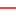

<!doctype html>
<html lang="it">
    <head>
        <meta charset="utf-8">
        <meta http-equiv="X-UA-Compatible" content="IE=edge">
        <meta name="viewport" content="initial-scale=1,user-scalable=no,maximum-scale=1,width=device-width">
        <meta name="mobile-web-app-capable" content="yes">
        <meta name="apple-mobile-web-app-capable" content="yes">
        <link rel="stylesheet" href="css/leaflet.css"><link rel="stylesheet" href="css/L.Control.Locate.min.css">
        <link rel="stylesheet" href="css/qgis2web.css"><link rel="stylesheet" href="css/fontawesome-all.min.css">
        <style>
        html, body, #map {
            width: 100%;
            height: 100%;
            padding: 0;
            margin: 0;
        }
        </style>
        <title>Rischi Incendi Boschivi e Interfaccia</title>
    </head>
    <body>
        <div id="map">
        </div>
        <script src="js/qgis2web_expressions.js"></script>
        <script src="js/leaflet.js"></script><script src="js/L.Control.Locate.min.js"></script>
        <script src="js/leaflet.rotatedMarker.js"></script>
        <script src="js/leaflet.pattern.js"></script>
        <script src="js/leaflet-hash.js"></script>
        <script src="js/Autolinker.min.js"></script>
        <script src="js/rbush.min.js"></script>
        <script src="js/labelgun.min.js"></script>
        <script src="js/labels.js"></script>
        <script src="data/ConfineComunale_1.js"></script>
        <script src="data/FasciaPerimetrale_2.js"></script>
        <script src="data/FasciaInterfaccia_3.js"></script>
        <script src="data/Fabbricati_4.js"></script>
        <script>
        var highlightLayer;
        function highlightFeature(e) {
            highlightLayer = e.target;
            highlightLayer.openPopup();
        }
        var map = L.map('map', {
            zoomControl:true, maxZoom:28, minZoom:1
        })
        var hash = new L.Hash(map);
        map.attributionControl.setPrefix('<a href="https://github.com/tomchadwin/qgis2web" target="_blank">qgis2web</a> &middot; <a href="https://leafletjs.com" title="A JS library for interactive maps">Leaflet</a> &middot; <a href="https://qgis.org">QGIS</a>');
        var autolinker = new Autolinker({truncate: {length: 30, location: 'smart'}});
        L.control.locate({locateOptions: {maxZoom: 19}}).addTo(map);
        var bounds_group = new L.featureGroup([]);
        function setBounds() {
            if (bounds_group.getLayers().length) {
                map.fitBounds(bounds_group.getBounds());
            }
            map.setMaxBounds(map.getBounds());
        }
        map.createPane('pane_GoogleSatellite_0');
        map.getPane('pane_GoogleSatellite_0').style.zIndex = 200;
        var layer_GoogleSatellite_0 = L.tileLayer('https://mt1.google.com/vt/lyrs=s&x={x}&y={y}&z={z}', {
            pane: 'pane_GoogleSatellite_0',
            opacity: 1.0,
            attribution: '<a href="https://www.google.at/permissions/geoguidelines/attr-guide.html">Map data ©2015 Google</a>',
            minZoom: 1,
            maxZoom: 28,
            minNativeZoom: 0,
            maxNativeZoom: 20
        });
        layer_GoogleSatellite_0;
        map.addLayer(layer_GoogleSatellite_0);
        function pop_ConfineComunale_1(feature, layer) {
            layer.on({
                mouseout: function(e) {
                    if (typeof layer.closePopup == 'function') {
                        layer.closePopup();
                    } else {
                        layer.eachLayer(function(feature){
                            feature.closePopup()
                        });
                    }
                },
                mouseover: highlightFeature,
            });
            var popupContent = '<table>\
                    <tr>\
                        <td colspan="2">' + (feature.properties['id'] !== null ? autolinker.link(feature.properties['id'].toLocaleString()) : '') + '</td>\
                    </tr>\
                </table>';
            layer.bindPopup(popupContent, {maxHeight: 400});
        }

        function style_ConfineComunale_1_0() {
            return {
                pane: 'pane_ConfineComunale_1',
                opacity: 1,
                color: 'rgba(255,0,0,1.0)',
                dashArray: '',
                lineCap: 'square',
                lineJoin: 'bevel',
                weight: 2.0,
                fillOpacity: 0,
                interactive: false,
            }
        }
        map.createPane('pane_ConfineComunale_1');
        map.getPane('pane_ConfineComunale_1').style.zIndex = 201;
        map.getPane('pane_ConfineComunale_1').style['mix-blend-mode'] = 'normal';
        var layer_ConfineComunale_1 = new L.geoJson(json_ConfineComunale_1, {
            attribution: '',
            interactive: false,
            dataVar: 'json_ConfineComunale_1',
            layerName: 'layer_ConfineComunale_1',
            pane: 'pane_ConfineComunale_1',
            onEachFeature: pop_ConfineComunale_1,
            style: style_ConfineComunale_1_0,
        });
        bounds_group.addLayer(layer_ConfineComunale_1);
        map.addLayer(layer_ConfineComunale_1);
        function pop_FasciaPerimetrale_2(feature, layer) {
            layer.on({
                mouseout: function(e) {
                    if (typeof layer.closePopup == 'function') {
                        layer.closePopup();
                    } else {
                        layer.eachLayer(function(feature){
                            feature.closePopup()
                        });
                    }
                },
                mouseover: highlightFeature,
            });
            var popupContent = '<table>\
                    <tr>\
                        <td colspan="2">' + (feature.properties['id'] !== null ? autolinker.link(feature.properties['id'].toLocaleString()) : '') + '</td>\
                    </tr>\
                </table>';
            layer.bindPopup(popupContent, {maxHeight: 400});
        }

        function style_FasciaPerimetrale_2_0() {
            return {
                pane: 'pane_FasciaPerimetrale_2',
                opacity: 1,
                color: 'rgba(56,128,54,1.0)',
                dashArray: '',
                lineCap: 'butt',
                lineJoin: 'miter',
                weight: 1.0, 
                fill: true,
                fillOpacity: 1,
                fillColor: 'rgba(77,175,74,0.30196078431372547)',
                interactive: false,
            }
        }
        map.createPane('pane_FasciaPerimetrale_2');
        map.getPane('pane_FasciaPerimetrale_2').style.zIndex = 202;
        map.getPane('pane_FasciaPerimetrale_2').style['mix-blend-mode'] = 'normal';
        var layer_FasciaPerimetrale_2 = new L.geoJson(json_FasciaPerimetrale_2, {
            attribution: '',
            interactive: false,
            dataVar: 'json_FasciaPerimetrale_2',
            layerName: 'layer_FasciaPerimetrale_2',
            pane: 'pane_FasciaPerimetrale_2',
            onEachFeature: pop_FasciaPerimetrale_2,
            style: style_FasciaPerimetrale_2_0,
        });
        bounds_group.addLayer(layer_FasciaPerimetrale_2);
        map.addLayer(layer_FasciaPerimetrale_2);
        function pop_FasciaInterfaccia_3(feature, layer) {
            layer.on({
                mouseout: function(e) {
                    if (typeof layer.closePopup == 'function') {
                        layer.closePopup();
                    } else {
                        layer.eachLayer(function(feature){
                            feature.closePopup()
                        });
                    }
                },
                mouseover: highlightFeature,
            });
            var popupContent = '<table>\
                    <tr>\
                        <td colspan="2">' + (feature.properties['id'] !== null ? autolinker.link(feature.properties['id'].toLocaleString()) : '') + '</td>\
                    </tr>\
                </table>';
            layer.bindPopup(popupContent, {maxHeight: 400});
        }

        function style_FasciaInterfaccia_3_0() {
            return {
                pane: 'pane_FasciaInterfaccia_3',
                opacity: 1,
                color: 'rgba(128,14,16,1.0)',
                dashArray: '',
                lineCap: 'butt',
                lineJoin: 'miter',
                weight: 1.0, 
                fill: true,
                fillOpacity: 1,
                fillColor: 'rgba(228,26,28,0.30196078431372547)',
                interactive: false,
            }
        }
        map.createPane('pane_FasciaInterfaccia_3');
        map.getPane('pane_FasciaInterfaccia_3').style.zIndex = 203;
        map.getPane('pane_FasciaInterfaccia_3').style['mix-blend-mode'] = 'normal';
        var layer_FasciaInterfaccia_3 = new L.geoJson(json_FasciaInterfaccia_3, {
            attribution: '',
            interactive: false,
            dataVar: 'json_FasciaInterfaccia_3',
            layerName: 'layer_FasciaInterfaccia_3',
            pane: 'pane_FasciaInterfaccia_3',
            onEachFeature: pop_FasciaInterfaccia_3,
            style: style_FasciaInterfaccia_3_0,
        });
        bounds_group.addLayer(layer_FasciaInterfaccia_3);
        map.addLayer(layer_FasciaInterfaccia_3);
        function pop_Fabbricati_4(feature, layer) {
            layer.on({
                mouseout: function(e) {
                    if (typeof layer.closePopup == 'function') {
                        layer.closePopup();
                    } else {
                        layer.eachLayer(function(feature){
                            feature.closePopup()
                        });
                    }
                },
                mouseover: highlightFeature,
            });
            var popupContent = '<table>\
                    <tr>\
                        <td colspan="2">' + (feature.properties['id'] !== null ? autolinker.link(feature.properties['id'].toLocaleString()) : '') + '</td>\
                    </tr>\
                </table>';
            layer.bindPopup(popupContent, {maxHeight: 400});
        }

        function style_Fabbricati_4_0() {
            return {
                pane: 'pane_Fabbricati_4',
                opacity: 1,
                color: 'rgba(35,35,35,1.0)',
                dashArray: '',
                lineCap: 'butt',
                lineJoin: 'miter',
                weight: 1.0, 
                fill: true,
                fillOpacity: 1,
                fillColor: 'rgba(114,155,111,1.0)',
                interactive: false,
            }
        }
        map.createPane('pane_Fabbricati_4');
        map.getPane('pane_Fabbricati_4').style.zIndex = 204;
        map.getPane('pane_Fabbricati_4').style['mix-blend-mode'] = 'normal';
        var layer_Fabbricati_4 = new L.geoJson(json_Fabbricati_4, {
            attribution: '',
            interactive: false,
            dataVar: 'json_Fabbricati_4',
            layerName: 'layer_Fabbricati_4',
            pane: 'pane_Fabbricati_4',
            onEachFeature: pop_Fabbricati_4,
            style: style_Fabbricati_4_0,
        });
        bounds_group.addLayer(layer_Fabbricati_4);
        map.addLayer(layer_Fabbricati_4);
            var title = new L.Control();
            title.onAdd = function (map) {
                this._div = L.DomUtil.create('div', 'info');
                this.update();
                return this._div;
            };
            title.update = function () {
                this._div.innerHTML = '<h2>Rischi Incendi Boschivi e Interfaccia</h2>';
            };
            title.addTo(map);
        var baseMaps = {};
        L.control.layers(baseMaps,{' Fabbricati': layer_Fabbricati_4,' Fascia Interfaccia': layer_FasciaInterfaccia_3,' Fascia Perimetrale': layer_FasciaPerimetrale_2,' Confine Comunale': layer_ConfineComunale_1,"Google Satellite": layer_GoogleSatellite_0,},{collapsed:false}).addTo(map);
        setBounds();
        </script>
    </body>
</html>
